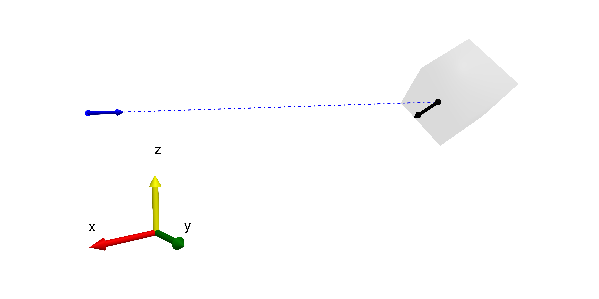

Rays
Individual monochromatic rays form the basic building blocks to describe the propagation of light through an optical system using geometrical optics. In general, the ray path in the context of this package is described by
\[\vec{x}(t) = \vec{p} + t \cdot \vec{d}\]
where $\vec{p}$ and $\vec{d}$ are the position and direction $\mathbb{R}^3$-vectors, respectively. The ray length $t$ is used to describe the geometrical length of the ray. This assumes that the BeamletOptics.RefractiveIndex along the ray path is constant. If after solving an optical system a ray intersection is determined, a new ray must be spawned to model an arbitrary light path. This data is stored, e.g., in a Beam. More on this can be found in the Beams chapter.
Basic Ray
The generic type that describes geometrical rays is BeamletOptics.AbstractRay. Refer to its documentation for more information about what data is used to model light propagation. A minimal implementation of this API (i.e. subtype) is provided by the Ray:
BeamletOptics.Ray — TypeRay{T} <: AbstractRay{T}Mutable struct to store ray information.
Fields
pos: a point in R³ that describes theRayorigindir: a normalized vector in R³ that describes theRaydirectionintersection: refer toIntersectionλ: wavelength in [m]n: refractive index along the beam path
This ray type is able to model reflection and refraction, using Snell's law, within the limits of geometrical optics. A single ray only ever describes the optical path between its starting point and the closest intersection, e.g. the surface of a Lens. A visualization is shown below. The position of the Ray is stored in relation to a global coordinate system. The normed direction is indicated by the blue arrow. The Ray intersects with a shape and stores this data in the intersection field. This includes the length until the point of intersection (marked as a dashed blue line) and the normal vector at the intersected surface (marked by a black arrow).

Polarized Rays
In order to model the effect of polarizing elements, e.g. a $\lambda/4$-plate, the polarization ray tracing calculus of Yun et. al is used [3, 4]. This formalism allows to model the effects of said elements on the electric field vector $E_0$ using the Jones formalism in global coordinates:
BeamletOptics.PolarizedRay — TypePolarizedRay{T} <: AbstractRay{T}A ray type to model the propagation of an electric field vector based on the publication:
Yun, Garam, Karlton Crabtree, and Russell A. Chipman. "Three-dimensional polarization ray-tracing calculus I: definition and diattenuation." Applied optics 50.18 (2011): 2855-2865.
The geometrical ray description is identical to the standard Ray. The polarization interaction can be described in local s-p-coordinates but must be transformed into global coordinates using the method described in the publication above, see also _calculate_global_E0.
Fields
pos: a point in R³ that describes theRayorigindir: a normalized vector in R³ that describes theRaydirectionintersection: refer toIntersectionλ: wavelength in [m]n: refractive index along the beam pathE0: complex-valued 3-tuple to represent the electric field in global coordinates
Jones matrices
In local coordinates the Jones matrices in the case of reflection/refraction are defined as
- reflection: [-rₛ 0; 0 rₚ]
- transmission: [tₛ 0; 0 tₚ]
where r and t are the complex-valued Fresnel coefficients (see also fresnel_coefficients).
Additional information
It is assumed that the electric field vector $E_0$ stays orthogonal to the direction of propagation throughout the optical system.
E0 can not be converted into an intensity value, since a single PolarizedRay can not directly model the change in intensity during imaging by an optical system.
Fresnel coefficients
This package uses the equations of Fowles [5, p. 44] and Peatross [6, p. 78] to determine the Fresnel coefficents at a given surface where the PolarizedRay enters from a medium with (complex) refractive index $n_1$ into a medium with $n_2$. The ability to define coatings is currently not included.
When a PolarizedRay interacts with a refractive medium, e.g. an BeamletOptics.AbstractRefractiveOptic, the default tracing behaviour is to only trace the refracted and ignore the reflected ray, unless Total Internal Reflection (TIR) occurs.
Below the Fresnel coefficients for different $n_1 \rightarrow n_2$ interfaces are listed to highlight the definition of signs used for this package.
Vacuum to glass
First, the Fresnel coefficients for $n_1 = 1.0$ to $n_2 = 1.5$ will be calculated. The angle of incidence $\theta$ refers to the plane of incidence in the senkrecht and parallel coordinate system. Note that the imaginary part of the coefficents is shown by the dash-dotted lines.
using BeamletOptics
# Angle of incidence
θ = deg2rad.(0:.01:90)
# Define refractive indices - vacuum to glass
n1 = 1.0
n2 = 1.5
# Calculate complex Fresnel coefficients
rs, rp, ts, tp = BeamletOptics.fresnel_coefficients(θ, n2/n1)Note that for this example, the imaginary part of the coefficients is zero for all considered θs.
Glass to vacuum
For a glass-vacuum interface with $n_1 = 1.5$ to $n_2 = 1.0$ the coefficients are calculated likewise. Note the unsteadiness of the coefficients at around 40°. This is the critical angle where TIR occurs.
# Define refractive indices - glass to vacuum
n1 = 1.5
n2 = 1.0
# Calculate complex Fresnel coefficients
rs, rp, ts, tp = BeamletOptics.fresnel_coefficients(θ, n2/n1)